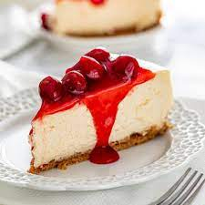

Awesome Cheesecake Recipe

List of Ingredients
Crust
- 128g of graham cracker crumbs, 9i to 10 whole graham crackers, crushed
- 28g confectioner's sugar
- 74g tablespoons butter, melted
- 1/8 teaspoon salt
Filling
- 425g cream cheese, at room temperature
- 152g granulated sugar
- 2 large eggs, at room temperature
- 1 teaspoon King Arthur Pure Vanilla Extract
Instructions
- Select a pie pan whose inside top dimension is at least 9", and whose height is at least 1 1/4". Preheat the oven to 350°F.
- To make the crust: Stir together all of the crust ingredients, mixing until thoroughly combined.
- Press the crumbs into the bottom and up the sides of the pie pan, making a thicker layer on the bottom than on the sides.
- To make the filling: Mix together the room-temperature cream cheese and sugar until smooth. Mix in the eggs and vanilla, again mixing until smooth.
To avoid beating too much air into the batter, use a mixer set at low-medium speed. To avoid lumps, make sure the cream cheese is softened, and/or at room temperature.
- Set the pie pan onto a baking sheet, if desired; this makes it easier to transport in and out of the oven, and also protects the bottom of the crust from any potential scorching.
Pour the filling into the crust.
- To bake the cheesecake: Place the cheesecake in the oven. Bake it for 20 minutes, then add a crust shield; or shield the crust with strips of aluminum foil.
Bake for an additional 10 minutes (for a total of about 30 minutes). A digital thermometer inserted into the filling 1" from the edge should read between 165°F and 170°F; the filling won't look entirely set in the center.
- Remove the cheesecake from the oven and set it on a rack to cool. Once the cake is cool, refrigerate it, covered, until you're ready to serve it.
- Serve cheesecake in wedges, with fresh fruit if desired.
- Storage information: Store any leftover cheesecake in the refrigerator for several days; freeze for longer storage
Return to Home Page